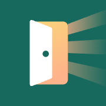
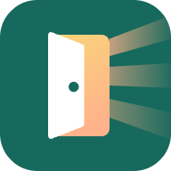
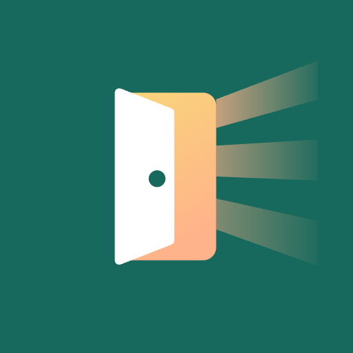

16 · tabfavicon-16.png
48 · Windowsfavicon-48.png

180 · iOS homeapple-touch-icon.png
192 · Androidicon-192.png
512 · maskableicon-maskable-512.png
180 · iOS homeapple-touch-icon.png
192 · Androidicon-192.png
512 · maskableicon-maskable-512.png